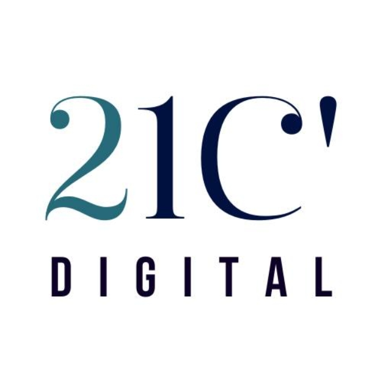

Mes Stages
Stage PFA - I-WAY (2022-2023)
Entreprise : I-WAY - Entreprise de Services Numériques internationale
Durée : 3 mois (2022-2023)
Lieu : Sfax, Tunisie
Objectif : Développement d'une application web de gestion de pharmacies visant à optimiser et rationaliser les opérations dans les établissements pharmaceutiques. Le projet a été développé en utilisant Spring Boot pour le back-end et Angular pour le front-end. Cette application permet de gérer les stocks, les ventes et les opérations internes de manière plus fluide et plus efficace.
Tâches réalisées :
- Développement de l'architecture de l'application avec Spring Boot.
- Création des interfaces utilisateurs avec Angular.
- Implémentation de la gestion des stocks et des ventes.
- Optimisation des processus métiers de la pharmacie pour une meilleure gestion.
Stage PFE - 21'C Digital (2023-2024)
Entreprise :  21'C Digital - Spécialiste de la transformation numérique
Durée : 6 mois (2023-2024)
Lieu : Sfax, Tunisie
Objectif : Conception d'une application Web dédiée à l'apprentissage en ligne. Cette application vise à simplifier et améliorer le processus d'enseignement et d'apprentissage en permettant de créer, gérer et diffuser du contenu éducatif, ainsi que de suivre et évaluer les performances des apprenants.
Tâches réalisées :
- Conception de l'architecture de l'application avec une approche modulaire.
- Développement de fonctionnalités de gestion de contenu éducatif.
- Création des outils de suivi et d'évaluation des apprenants.
- Amélioration de l'interface utilisateur pour une meilleure expérience d'apprentissage.
- Intégration d'une fonctionnalité de visioconférence Zoom dans l'application pour faciliter les interactions en temps réel entre les apprenants et les formateurs.